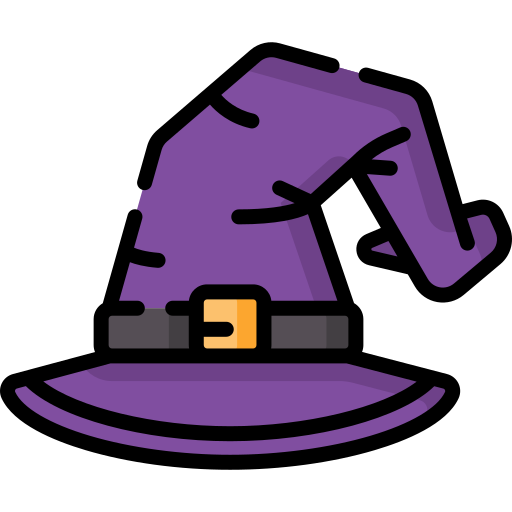

Apresentação
Ronaldinho Gaúcho, R10 ou Bruxo para os mais íntimos, é uma figura icônica no mundo do futebol. Com uma carreira brilhante, ele conquistou fãs ao redor do mundo com seu talento excepcional e carisma. Ele que brilhou por onde passou, foi aplaudido de pé pela torcida do maior clube do mundo que por acaso era seu rival naquele dia e com sua humildade e sorriso largo encantou torcedores do mundo todo!
Carreira
Início no Grêmio


Desde o início de sua jornada em 1997, Ronaldinho mostrou um potencial incrível. Ainda com 17 anos se destacou atuando no time do Grêmio, ganhando o título do campeonato Sub-17 de 1997 tendo como seu primeiro treinador Sebastião Lazaroni. Sua primeira aparição como profissional ocorreu em 1998, na Copa Libertadores da América, onde logo sua habilidade e seu grande domínio de bola começaram a ser notados pelos clubes.
Em 1999, além da consagração no jogo contra a Seleção Venezuelana pela Copa América, Ronaldinho também brilhou nas finais do Campeonato Gaúcho, quando fez o gol do título contra o rival Internacional. Além da boa atuação, o jovem foi audaz e ficou marcado por ter realizado dribles fantásticos em Dunga, o capitão do tetracampeonato de 1994.
Sua atuação nessa final foi um importante fator para sua convocação à Seleção Brasileira, sendo chamado pelo então técnico Vanderlei Luxemburgo. Disputou 141 partidas e marcou 68 gols pelo Grêmio, contando partidas oficiais e amistosos. Alguns o consideram a maior revelação do Grêmio desde Renato Gaúcho.
Transferência para a Europa


Ronaldinho Gaúcho despertou interesse de clubes europeus, e o Paris Saint-Germain ofereceu 7 milhões de euros por ele. No entanto, o Grêmio recusou, pois lucrava com sua presença no time. Em 2001, com contrato perto do fim, Ronaldinho assinou um pré-contrato com o PSG sem consentimento do clube brasileiro, o que gerou uma disputa judicial e o afastou dos gramados por meses.
No PSG, Ronaldinho teve problemas com o técnico Luis Fernández devido a seu estilo de vida fora de campo. Mesmo assim, destacou-se em jogos contra grandes times. Após a Copa de 2002, quis sair do clube e, em 2003, optou pelo Barcelona, recusando outras ofertas.
No Barcelona, chegou em 2003 e brilhou rapidamente. Em sua primeira temporada, ajudou o time a conquistar o vice-campeonato espanhol. Na temporada seguinte, foi decisivo na conquista do título espanhol e da Supercopa. Em 2005, venceu a Bola de Ouro e o prêmio de Melhor Jogador do Mundo pela FIFA.
Na temporada 2005–06, consolidou-se como um dos melhores do mundo, vencendo novamente o Campeonato Espanhol e a Liga dos Campeões. Sua atuação memorável contra o Real Madrid, recebendo aplausos da torcida rival, marcou sua carreira. Com problemas físicos na temporada 2007–08, deixou o clube em 2008.
Ronaldinho recusou o Manchester City e transferiu-se para o Milan. Sua primeira temporada foi abaixo das expectativas, mas na segunda, recuperou o bom futebol e se destacou. Em 2010, foi eleito o futebolista da década pela revista World Soccer e encerrou a temporada como líder de assistências da Serie A.
Volta ao Brasil


Flamengo
Ronaldinho Gaúcho decidiu voltar ao Brasil para aumentar suas chances de disputar a
Apresentado em 12 de janeiro de 2011 no Estádio da Gávea, Ronaldinho foi recebido por mais de 20 mil torcedores. O Flamengo estipulou uma multa rescisória milionária para protegê-lo de transferências inesperadas. Ele estreou pelo clube no Campeonato Carioca, onde marcou seu primeiro gol e liderou a equipe à conquista da Taça Guanabara e do Campeonato Carioca.
No Brasileirão, Ronaldinho teve atuações memoráveis, incluindo um hat-trick contra o Santos na vitória épica por 5–4. Enfrentou vaias intensas da torcida do Grêmio ao jogar contra seu ex-clube, sendo chamado de "mercenário" pelos gremistas. Sua passagem pelo Flamengo, apesar dos momentos brilhantes, foi marcada por polêmicas.
A relação com o Flamengo se deteriorou quando a Traffic, empresa que financiava parte de seu salário, interrompeu os pagamentos. O clube prometeu cobrir os custos, mas falhou, levando Ronaldinho a rescindir o contrato na Justiça em maio de 2012. Ele alegou atrasos salariais e pediu 40 milhões de reais. No total, marcou 28 gols em 74 jogos e conquistou um Campeonato Carioca antes de sua saída conturbada.
Atlético Mineiro
Ronaldinho chegou ao Atlético Mineiro em junho de 2012, após rescindir contrato com o Flamengo. A negociação foi rápida, com o presidente Alexandre Kalil fechando o acordo com o jogador e seu irmão Assis. A apresentação foi discreta, mas cercada de grande expectativa. Seu contrato inicial era de seis meses, com um salário bem inferior ao que recebia no Flamengo. Desde o início, Ronaldinho destacou seu objetivo de conquistar um título importante para o clube.
Na primeira temporada, sua estreia aconteceu contra o Palmeiras, e ele rapidamente se tornou peça fundamental no time. Marcou gols decisivos, como no clássico contra o Cruzeiro, e ajudou o Atlético a terminar o Campeonato Brasileiro em segundo lugar, garantindo vaga na Libertadores de 2013. Sua atuação rendeu prêmios individuais, como Bola de Ouro da Placar e Craque da Galera do Brasileirão.
Em 2013, Ronaldinho renovou com o Atlético e teve participação destacada no Campeonato Mineiro e na Libertadores. No torneio continental, brilhou na fase de grupos e em jogos decisivos, como contra o São Paulo e Arsenal de Sarandí. Apesar de momentos de críticas por sua postura fora de campo, foi crucial na conquista inédita da Libertadores para o clube. Na final contra o Olimpia, foi um dos líderes do time, consolidando-se como um dos grandes nomes da história do Galo.
Ronaldinho permaneceu no Atlético até julho de 2014, conquistando ainda a Recopa Sul-Americana. Ao todo, marcou 28 gols em 88 partidas e deixou o clube como ídolo. Sua passagem foi marcada por genialidade dentro de campo e polêmicas fora dele, mas ficou eternizada na história atleticana.
Querétaro e Fluminense
Ronaldinho assinou com o Querétaro, do México, em setembro de 2014, por dois anos. Sua estreia aconteceu no dia 18 do mesmo mês, na Copa do México, diante de 35 mil torcedores, mas perdeu um pênalti na derrota para o Tigres. Poucos dias depois, marcou seu primeiro gol pelo clube, também de pênalti, na vitória sobre o Chivas por 4–1.
Em março de 2015, conquistou a Copa El Rancho nos Estados Unidos, marcando um gol na final contra o Puebla. No mês seguinte, brilhou contra o América no Estádio Azteca, marcando dois gols em apenas oito minutos e sendo aplaudido pela torcida adversária.
Ronaldinho deixou o Querétaro em junho de 2015, após nove meses, 32 partidas e oito gols. Foi peça-chave na campanha do vice-campeonato do Clausura Mexicano, mas sua passagem gerou polêmicas sobre disciplina. Ainda assim, seu talento e importância em campo foram reconhecidos pela diretoria do clube.
Após sua saída, acertou com o Fluminense em julho de 2015, recebendo a camisa 10. Estreou no dia 1º de agosto contra o Grêmio, sendo ovacionado pela torcida e ajudando na vitória por 1–0. Apesar de boas atuações iniciais, seu desempenho caiu, e ele deixou o clube no início de 2016.
Sem assinar com outro time nos anos seguintes, Ronaldinho teve sua aposentadoria confirmada em 2018 por seu irmão e empresário.
Seleção Brasileira


Ronaldinho estreou pela Seleção Brasileira em junho de 1999, mas se destacou na Copa América do mesmo ano ao marcar um belo gol contra a Venezuela. No ano seguinte, foi o principal nome da equipe nas Olimpíadas de Sydney, mas o Brasil caiu para Camarões nas quartas de final.
Na Copa do Mundo de 2002, formou o trio ofensivo "três Rs" ao lado de Ronaldo e Rivaldo. Marcou um gol e deu assistência na virada sobre a Inglaterra nas quartas de final, mas foi expulso e perdeu a semifinal. Retornou para a final contra a Alemanha, ajudando na conquista do pentacampeonato.
Já como melhor jogador do mundo, Ronaldinho era a grande esperança do Brasil na Copa de 2006, mas teve desempenho abaixo do esperado. Foi criticado pelo esquema tático adotado e pela eliminação diante da França. O descontentamento da torcida foi tão grande que até uma estátua sua foi incendiada em Chapecó.
Em 2008, foi convocado para as Olimpíadas de Pequim como o jogador mais experiente do elenco. Apesar de boa campanha inicial, o Brasil foi eliminado pela Argentina na semifinal. Segundo a comissão técnica, Ronaldinho estava fisicamente abaixo do ideal.
Sua última partida antes da Copa de 2010 foi em 2009, nas Eliminatórias. Apesar dos apelos populares por sua convocação, ficou apenas na lista de suplentes, pois Dunga questionava seu comprometimento.
Retornou à Seleção com Mano Menezes, jogando amistosos em 2010 e 2011, incluindo contra Argentina e Gana. Sua última partida pela Amarelinha aconteceu em 2013, como capitão em um empate contra o Chile. Rumores indicam que teria se apresentado bêbado, o que pode ter selado seu afastamento definitivo da equipe.
Resumo profissional
- Início promissor em 1997.
- Grande sucesso com o Barcelona (2003–2008): Conquistou a Liga dos Campeões de 2006, venceu duas vezes o prêmio de Melhor Jogador do Mundo da FIFA (2004 e 2005) e recebeu aplausos da torcida do Real Madrid no Santiago Bernabéu.
- Consagração na Copa do Mundo de 2002: Foi peça-chave no título mundial com a Seleção Brasileira, marcando um gol icônico contra a Inglaterra e formando o trio dos "Três Rs" ao lado de Ronaldo e Rivaldo.
- Título inédito da Libertadores com o Atlético Mineiro (2013): Liderou a equipe na maior conquista da história do clube, sendo fundamental em partidas decisivas.
- Bola de Ouro (2005), FIFA World Player of the Year (2004, 2005), Melhor Jogador da UEFA (2005) e Bola de Prata da Copa do Mundo (2002)
Principais Conquistas
| Conquista | Ano |
|---|---|
| Campeonato Gaúcho - Grêmio | 1999 |
| Copa América - Seleção Brasileira | 1999 |
| Copa do Mundo - Seleção Brasileira | 2002 |
| Campeonato Espanhol - Barcelona | 2004-2005 |
| Copa das Confederações FIFA - Seleção Brasileira | 2005 |
| Campeonato Espanhol - Barcelona | 2005-2006 |
| Liga dos Campeões da UEFA - Barcelona | 2005-2006 |
| Supercopa da UEFA - Barcelona | 2006 |
| Serie A - Milan | 2010-2011 |
| Campeonato Carioca - Flamengo | 2011 |
| Campeonato Mineiro - Atlético Mineiro | 2013 |
| Libertadores da América - Atlético Mineiro | 2013 |
| Recopa Sul-Americana - Atlético Mineiro | 2014 |
Curiosidades sobre Ronaldinho
- Na infância, a sua principal diversão era brincar com a bola de futebol, junto dos seus melhores amigos. Com 7 anos começou a jogar na escola de futebol infantil do Grêmio.
- Aos 8 anos seu pai morreu ao cair em uma piscina, e ele recebeu apoio de sua mãe, da sua irmã, e passou a enxergar seu irmão mais velho como figura paterna.
- Desde pequeno, Ronaldinho já demonstrava habilidade com a bola, como se pode ver em vídeos caseiros da sua família.
- Quando Ronaldinho tinha 13 anos de idade, marcou 23 gols num jogo só
- Em 2001, Ronaldinho foi acusado de ter cometido dois delitos: ter falsificado sua carteira de motorista e ter agredido um menor ao atirar-lhe uma mexerica.
- Em 2018, Ronaldinho Gaúcho filiou-se ao Partido Republicano Brasileiro (PRB) do Distrito Federal, visando uma possível candidatura para deputado ou senador nas eleições gerais de 2018.
- Em 11 de abril de 2011, Ronaldinho recebeu da Academia Brasileira de Letras a Medalha Machado de Assis, tornando-se o primeiro jogador a ser agraciado com a honraria.
- Em 30 de setembro de 2012, Ronaldinho Gaúcho, que não havia completado dois meses residindo em BH, recebeu no plenário da Câmara Municipal de Belo Horizonte o título de Cidadão Honorário da capital mineira.
- Ronaldinho ficou na 82ª colocação no programa televisivo O Maior Brasileiro de Todos os Tempos, apresentado na SBT em julho de 2012, que contava com o voto popular.
- Em 5 de abril de 2017, Ronaldinho recebeu o título de Cidadão Honorário do Município do Rio de Janeiro.
- Em abril de 2022, foi lançado "Ronaldinho: O Homem mais Feliz do Mundo", documentário lançado no FIFA+
- Ronaldinho Gaúcho participou de várias músicas, incluindo "Solteiro de Novo", "Garra", "O Segredo do Feijão", "Saideira", "Explana o Escondido", "Minha Identidade" e "Olé Olé". Ele também compôs canções como "Solteiro de Novo", "No Meu Quintal", "Você Não Vive sem" e "Passinho".
- Marcou mais de 300 gols ao longo de sua carreira
- Participou de 531 gols, entre gols e assistências
- Ronaldinho Gaúcho ganhou o apelido de “bruxo” devido à sua habilidade mágica com a bola, que encantava torcedores e adversários
Contemple os melhores momentos desse bruxo do futebol